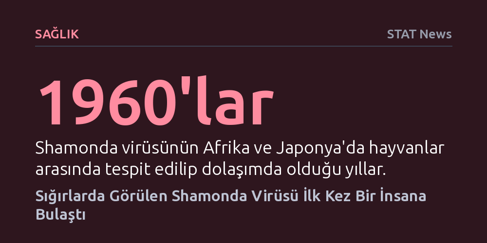

SAGLIK · STAT News · 2026-10-27
Fransa'da sığırlara özgü Shamonda virüsü ilk kez bağışıklığı baskılanmış bir insanda tespit edildi ve hasta hayatını kaybetti. Sağlık yetkilileri virüsün tatarcık sinekleriyle bulaştığını belirtirken, Dünya Sağlık Örgütü insanlar arasında geniş çaplı bir yayılma riski görmüyor.
Hayvan virüslerinin bağışıklığı zayıf bireylerde ölümcül enfeksiyonlara yol açabileceğini, ancak her zoonotik sıçramanın kitlesel bir salgın tehdidi oluşturmadığını gösteriyor.

Fransa'nın Lyon kentinde, normalde yalnızca sığır ve küçükbaş hayvanları etkilediği bilinen Shamonda virüsü ilk defa bir insanda tespit edildi. Sağlık yetkililerinin aktardığı bilgilere göre, virüsün bulaştığı kişinin bağışıklık sistemi ileri derecede baskılanmıştı ve hasta enfeksiyonun ardından hayatını kaybetti. Araştırmacılar şu anda virüsün bu ölümdeki doğrudan payını ve hastanın mevcut sağlık sorunlarının süreci nasıl etkilediğini inceliyor.
Hastanın enfeksiyonu, bölgede yaygın olan ve "midge" olarak adlandırılan kan emici küçük tatarcık sineklerinin ısırması sonucu kaptığı düşünülüyor. Hastada birtakım nörolojik belirtiler gözlemlenmesi, hayvanlarda beyin ve omurilik hasarına yol açabilen bu patojenin insan vücudunda da benzer komplikasyonlar yaratabileceğini gösterdi. Yine de vakanın bağışıklığı aşırı zayıflamış bir bireyde ortaya çıkmış olması, genel nüfus açısından riskin sınırlı kalabileceğine işaret ediyor.
Shamonda virüsü tıp dünyası için bütünüyle yeni bir etken sayılmaz; 1960'lı yıllardan bu yana Afrika ve Japonya'daki çiftlik hayvanları arasında dolaşımda olduğu biliniyor. Ancak Avrupa kıtasındaki varlığı ilk kez bu yıl kayıtlara geçti. Özellikle sığırlar, koyunlar, keçiler ve nadiren atlar üzerinde etkili olan virüs; hayvanlarda yüksek ateş, gebeliklerde yavru atma ve ağır nörolojik bozukluklara yol açıyor.
İnsanda görülen bu ilk ölümcül vaka endişe yaratsa da uluslararası sağlık otoriteleri temkinli bir duruş sergiliyor. Avrupa Hastalık Önleme ve Kontrol Merkezi yeni vakaları yakından izlediğini duyururken, Dünya Sağlık Örgütü virüsün insanlar arasında kolayca yayılmasının beklenmediğini açıkladı. Kan emici sinekler dışında insandan insana doğrudan bulaşma kanıtı bulunmadığı için yetkililer panik gerektirecek bir tablo olmadığını vurguluyor.
Sağlık gündemindeki bir diğer kritik gelişme ise ABD Ulusal Sağlık Enstitüleri (NIH) bünyesinde kurulan yeni bir araştırma birimi oldu. Sağlık Bakanı Robert F. Kennedy Jr. tarafından öncelikle aşı hasarlarına odaklanacağı duyurulan merkezin asıl görevinin çok daha geniş kapsamlı olduğu ortaya çıktı. Yeni merkezin temel misyonu, enfeksiyonların ardından ortaya çıkan ve uzun süren kronik rahatsızlıkları derinlemesine incelemek olarak belirlendi.
Uzun Kovid gibi tabloları da kapsayacak bu araştırma programı, neden bazı insanların bağışıklık sisteminin enfeksiyonlara veya aşılara diğerlerinden çok daha sert ve yıpratıcı tepkiler verdiğini anlamayı hedefliyor. Doğrudan klinik tedavi sunmaktan ziyade yüzlerce gönüllünün katılacağı bir izlem çalışması şeklinde yürütülecek proje, aşıların ve tedavi yöntemlerinin güvenliğini artırmayı amaçlıyor. Merkezin başına getirilen bilim insanı, Kennedy'nin aşı şüpheciliğinden kaygı duyan çevrelerin dahi takdirini toplamış durumda.
Haftalık gelişmeler, tıp dünyasında sıkça karşılaşılan teşhis yanılgılarına ve mesleki gerilimlere de ışık tutuyor. Ünlü oyuncu Christina Applegate'in uzun yıllardır mücadele ettiğini duyurduğu multipl skleroz (MS) teşhisinin aslında yanlış olduğunu ve farklı bir tablo taşıdığını açıklaması, karmaşık semptomların ayrıştırılmasındaki zorlukları yeniden hatırlattı. Benzer şekilde, laboratuvar tahlilleri bütünüyle temiz çıkan ancak sürekli yorgun hisseden bireylerin yaşadığı durum, doğal yaşlanma süreci ile sinsi hastalıklar arasındaki sınırın ne kadar belirsizleşebileceğini gösteriyor.
Öte yandan Amerikan Diyabet Derneği'nin yıllık bilimsel toplantısında bildiri dağıtan beş doktor ve araştırmacının silahlı korumalar eşliğinde zorla salondan çıkarılması, tıp dernekleri içindeki ifade özgürlüğü sınırlarını tartışmaya açtı. Yaşanan krizin ardından dernek yönetiminin peş peşe yayımladığı çelişkili açıklamalar ve özür metinleri, sağlık dünyasındaki bürokratik ve idari tansiyonun kolay yatışmayacağını gözler önüne seriyor.